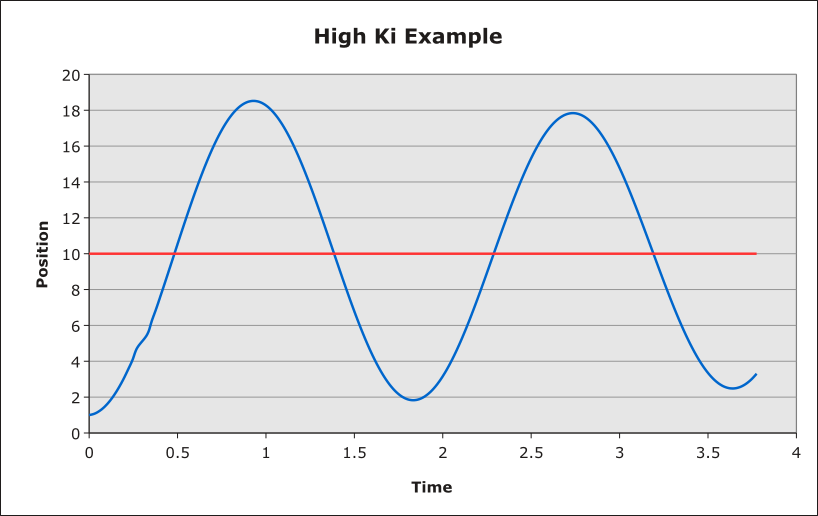

3-2 PID Part 1: PID Theory 3-2 PID Part 1: PID Theory
3-2 PID Part 1: PID Theory 3-2 PID Part 1: PID TheoryIn review, you have studied the various components of the robot, how they appear in code, and how to use them. The next three lessons will teach you one of the most important aspects of WPILib and robot programming in general -- the PID.
The PID is split up into three parts here because of its complexity. It is EXTREMELY important (enough that it will distinguish you as an accomplished robot programmer) that you know how to create a PID in your program - so pay close attention.
Robot programming is not the only thing that uses the PID -- it is used heavily in the automotive industry (think cruise control).
Fun fact: PID theory was developed by watching helmsmen steer a ship.
PID theory allows you to intelligently control a motor input by performing algebra and calculus on a sensor input. It is usually implemented in robotics using a class called a PID controller. This class reads from the appropriate sensor input, performs its calculations, and sets the appropriate motor output.
The idea behind the PID is that you want a given system to be in a specific position, usually fairly quickly. This is accomplished by setting the PID controller's setpoint.
The setpoint is what your sensor reads when the system is at the position you want it to be at. However, you must obtain this value manually — usually by controlling the system manually — and then feed it to the PID controller in the code (more on that later).
For example, the cruise control in a car is given a specific speed to run the car at (the setpoint), and it reads from the car's speedometer and controls the output of the engine so that the speed of the car is as close to the set speed as possible.
In the following sections, you will see the term error pop up a lot. In the context of the PID, error refers to the difference between the given sensor reading and the setpoint.
You will see this lesson refer to two different types of error: instantaneous error and accumulated error. Instantaneous error refers to the difference between the setpoint and the sensor reading at any given instant. Accumulated error is the sum of the errors at every instant from time 0 (when the PID controller is turned on) to the present moment.
All of the mathematical operations in a basic PID controller involve the error in some way.
The name PID
comes from constants that are given to the PID controller that dictate the manner in which it adjusts its output:
In the descriptions of the constants below, the graphs effectively show a reading from a sensor over time, with the red line being the setpoint. The other lines are examples showing the sensor reading over time given different constant values.
Just so you know: the PID is much more complex than what is explained here. Both the I and the D terms use calculus functions -- but don't fear, you do not need to know calculus to implement a PID. If you want a more thorough explanation of PID theory, go here.
When given a non-zero proportional constant Kp, the PID controller will simply multiply the instantaneous error by Kp. In effect, this produces an output that uses more power the further the system is from the setpoint.
Changing the value of Kp will effectively change the power of the PID controller.
Pure proportional control has a few problems. Firstly, if the error is significant, it tends to overshoot the setpoint, then moving back towards it. Secondly, if the proportional term is large enough, the system will not be able to respond as quickly to the changes in the desired output, and as such will lose stability. Finally, proportional control usually does not settle at the setpoint, but rather near it -- this is known as steady-state error. This occurs because the signal from the proportional control becomes negligible when the instantaneous error is very small, and so internal friction in the system is usually strong enough to resist any change.

Adding derivative control to the controller fixes two of the three problems with proportional control: overshoot and instability.
Derivative control takes the change of the instantaneous error over time and multiplies it by a derivative constant Kd. In effect, this damps the motion of the output and allows the system to reach its setpoint more gracefully.
The effect of increasing Kd will increase the amount of damping in the system, increasing the settling time — and potentially increasing the system's steady-state error.
Note that derivative control is sensitive to sensor noise (slight changes in the value that are associated with a lack of precision and not movement), and may take unneccessary damping action on the output.

While derivative control eliminates overshoot and instability in the proportional control, it still does not eliminate the steady-state error, as the error does not change once it reaches its steady state, which satisfies derivative control. To fix this, integral control is used.
Integral control looks at the accumulated error of the system as opposed to the instantaneous error. Integral control finds the accumulated error by integrating the error over the time period for which the controller has been running. It then multiplies this by the integral constant Ki. In effect, the longer the system is allowed to maintain steady-state error, the stronger the output from the integral term becomes, driving the system closer to its setpoint.
The effect of increasing Ki will increase the system's response to accumulated error, reducing the steady-state error. If the Ki constant is too large, the stability of the system will decrease (see below).
The following graph (specifically the green line) demonstrates what the output of a well-tuned PID controller would look like.

Effectively, what you should remember about each of these terms is:
Download the PID Simulation and open it. Play with the P, I and D constants and see how the output reacts to different values (the output is the red line, the setpoint is the blue line).
Try to accomplish the following:
Simulation source: Carnegie Mellon University (original file)
Image credits (P,D,final): University of Exeter
Ki graph generated with the PID simulation
| ← 3-1 Sensors and Information | 3-2 PID Part 1: PID Theory | 3-3 PID Part 2: Implementing a PID → |